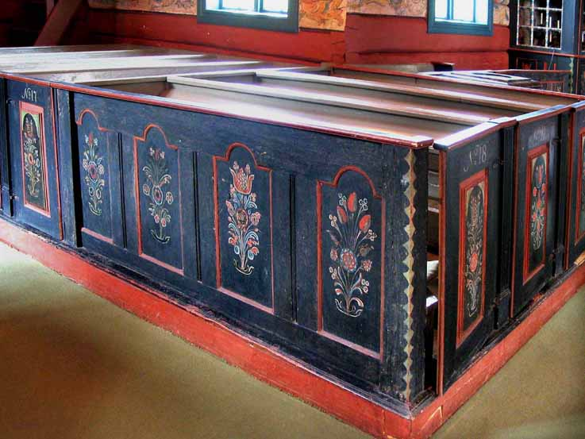
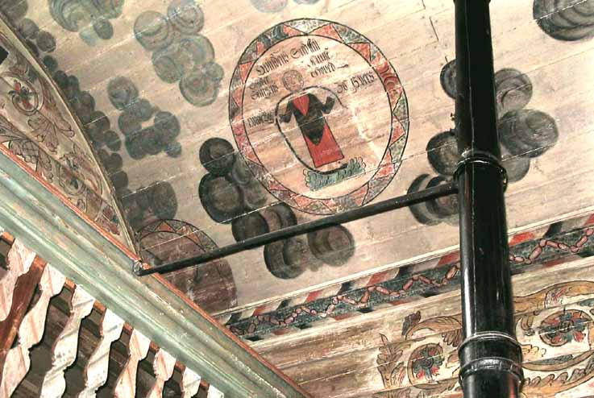

Grindheim kyrkje
Foto: Torvald Slettebø, Universitetet i Agder, Seniorsenteret
Tekster: frå brosjyre og jubileumsbok.
Kor lenge det har vore kyrkje her veit ein ikkje, men det har i alle fall vore ei kyrkje før denne. Om den gamle kyrkja heiter det i eit brev til sokneprest Søren Schive i 1781: «Om Kirkens Tilstand meldes at Bjelland, Grinnem og Åseral skal være meget brøstferdig.» Det blei også gjeve påbød om at kyrkjene måtte setjest i stand.
Men i staden for å reparera den gamle ville kyrkjelyden heller byggja ei ny og større kyrkje. Og i eit brev datert 7. juli 1781 til prost Bugge heiter det: «Stiftamtmannen og Biskop har intet imot at Grinnems Almue, som nu eier kirken, vil bygge en ny og større kirke i stædet for den gamle.»
Det blei Arnt Listad frå Konsmo som blei byggmeister for den nye kyrkja. Han var kjend som ein uvanlig flink tømmermann. Og han hadde med seg «sognets egne Tømmermenn».
Kyrkja er laftebygd av rundtømmer som skikken var i den tida. Om kyrkja seier Olav Seter: «Den er enkel, verdig, korsformet og velproporsjonert.»

Men det som fengsler mest er den vakre rosemålinga. Olav Seter seier det slik: «En fargerik og glad kirke, naiv kanskje, men vakker og særpreget.»
Meisteren for denne målinga er Tore Asbjørnsen Risøyne frå Fjotland, Grunnmotivet i målinga er den kjende akantusranka som er mye brukt i folkekunst i rosemåling og treskurd. Men det er mange velkjende ting frå bibelen som Tore Målar har gjort levande med sine fargar og strøk.
Fram til 1861 stod målinga til Risøyne uendra. Då blei altertavla måla kvit, og det heiter og: «På Galleriet både den med og den uten Jomfruer måtte også Dekorasjonen vike Plassen for den nye kvite Måling.»
Fram til 1861 stod målinga til Risøyne uendra. Då blei altertavla måla kvit, og det heiter og: «På Galleriet både den med og den uten Jomfruer måtte også Dekorasjonen vike Plassen for den nye kvite Måling.»

Men det er og dei som meiner at det kom påbod frå kyrkjeleg hald. Og i 1898 blei alt måla over. Det var Ola Arnesen, Konsmo som utførde dette arbeidet. Samtidig blei dørene til benkane tatt bort.
Men det varde ikkje lenge for det blei eit folkeønske å få att kyrkja som den hadde vore. Heldigvis kunne overmålinga fjernast utan å ska rosemålinga. Og i 1941 blei kyrkja restaurert. Det var Olav Seter som stod for det arbeidet. Den gamle benken som står ved veggen bak altertavla skal vere frå den gamle kyrkja. Og kyrkjebøssa ved sida av utgangsdøra er og gamal. Ho har årstalet 1745. Kyrkjeklokka har nok og kalla til gudsteneste i den gamle kyrkja. På klokka står at ho er «omstøbt av Jacob Rendler ano 1760». Det blir fortalt at då klokka skulle støypast om var Søren Schive tilstades. Han kasta ein sølv spesidaler i støypemassen og så sa han: «Jeg ofrer en spesidalar til», og kasta den andre daleren i.
Ser vi tilbake, så ser vi at måling og andre ting har blitt forandra. Men i meir enn 200 år har slekt etter slekt søkt til denne kyrkja for å finne han som ikkje forandrast. Han som gjev livet mål og meining, han som gjev trøyst i sorg, styrke i motgang og kastar glans over helg og høgtid.
Ser vi framover, må ønske for framtida bli det som er uttrykt slik i songen til 200 års jubileet. «Også nye ætters steg leide du på kyrkjeveg!»
Torje Aagedal fortel om Risøyne og målinga hans: Av Olav Seters skrift skal me berre ta med her noko han hermer etter Gamleklokkaren, Torje Aagedal : «Han fortel om Risøyne, at han skulle vera så flink til å syngja under arbeidet i kyrkja. En gang de roste min oldefar, stortingsmann Ola Refsnes - 1815-16, lensmann i Grindheim og Bjelland, for hans song, han var kjend for å ha fint mål, sa han: Det er ingen ting mot han Tore Målar, når han begynte å rulle med de store leppene sine. Når han sang på det beste, kunne de høre ham mangen gang helt opp på kirkekleiva, aust for kirken». Og så eit par ord om det dei gamle tykte om målinga til Risøyne: «Dei murra litt, for han slurva, og måla så fort, tykte folk».
Så gjekk det år etter år, born og andre som sat der dei første gongene, undra seg for alt det rare og uvande, men blei vane med kyrkja. Sjølve gudstenesta blei nå det den var tiltenkt, og fekk plass i tanke og sinn - til tukt og trøyst. Og den gode freden kom sigande inn - så velsigna og godt - i tru og tillit til det frelsesord som der blei forkynt.
I mange år stod så Risøyne si måling uendra, heilt til i 1861 då det ble ein del endringar. Det gjekk serleg ut over den djupblå altertavla, som blei måla kvit. Og så blei eit krusifiks og dei utskorne og måla 12 apostlane på altertavla fjerna. Krusifikset skal ha kome til Oslo, men kor dei 12 utskornne apostlane kom av, har ein ikkje høyrt noko sikkert om.
Overmålinga i 1898. Det hadde nå gått over 100 år sidan kyrkja blei måla i dei blomstrande rosemålingsfargar, som var sett så høgt på den tid.
På kister, skåp - og ikkje minst ølskåler - skulle det rosemåling til. Ja, mange dører, vegger og senger blei rosemåla heilt fram til 1860-70 åra. Ja, ølskåler som hadde vore flittig brukt i dei 100 åra, blei ikkje lenger nytta som før - nå blei dei berre brukte til pryd.
Det gjekk ein sterk motstraum mot det gamle tilvande i slutten av 1800 åra. Ein kan berre nemna at i mang ei stove med solide store og fine tømmervegger - serleg nystova - blei det med mykje arbeid sett på tapet.
Simon Byremo har med si gåve på kr. 100,- til overmålinga, blitt nemnd som den som åleine dreiv dette igjennom. Nå var Simon i den tid på det religiøse område nokså einerådande, men her var det ikkje berre tale om kr. 100,- til han som gjorde arbeidet. Rekneskapen for 1898 viser at målarsakene kosta kr. 278,-, og dei som laga stillaset for målaren fekk kr. 74,-. Dei måtte låna kr. 300,- i sparebanken og kr. 80,- av skulekassen for å gå gjort arbeidet.
Dei har på Grindheim ennå ei ølskål som Risøyne måla då han dreiv med kyrkjemålinga. Eit rim sette han etter vanleg skikk på skåla: «Ved Moses Slag gav Klippen Vand tap Øl i mig Jeg leske Kand». Det ville nok ikkje lenger vore passande med eit slikt rim.
Det er såleis klart at heradstyret var einig i overmålinga - men at det var mange som var sterkt imot, er ennå i friskt minne. Olav Seter har i sitt skrift om T.A.S. Risøyne fortalt noko om Ola Arnesen, Konsmo, som i 1898 hadde arbeidet med å overmåla kyrkja. Det var ikkje med i avtalen noko om å måla kyrkjegolvet. Han fekk difor tilbod om at han for det arbeidet skulle få kyrkjebørsa - med dei skillingane som var i den. Men så kom dei nok på at det ikkje var rett å ta den gamle kyrkjebørsa frå kyrkja - og han fekk då kr. 5,- for dette arbeidet.
«Til Guds ære og kirkens prydelse haver denne menighed ladet male denne kirke i 1791 av mig T.A.S.R. Bygd 1783» Denne innskrift målte Risøyne på takbjelken like framfor alteret, for at ein ikkje skulle gløyma kva tid dette store målararbeid var gjort, og kva tid kyrkja blei bygd.
«Prekestolens billeder av evangelistene er de samme som Eftestøl har malt i Bjelland kirkes vestgalleri, og den trefargede listen finner vi også igjen i Bjelland. Altertavlens nattverdscene har mye til felles med Tore Risøynes billede i taket i Grindheim kirke - Guttorm Eftestøls farger har representert noe hjemlig og trygt.»
Den andre hjelpesmann og elev Risøyne hadde med seg var Olav Toresen Kvinlaug, f. 1773. - Hans best kjente arbeid er Mjålandsstova i Åseral, måla i år 1800.
Tore Asbjørnson Risøyne, f. 1762. Etter Fjotlandsboka var han i heimbygda Fjotland skulemeister og kyrkjesongar. Men han var og målar, og arbeidet tok han tidleg til med, alt 18 år gamal hadde han eit stort arbeid i Tonstad kyrkje, og der bruka han bibelske bilete.

Ord om han har nok kome til Grindheim, når dei leiande trudde han til så stort eit arbeid som å rosemåla kyrkja. Det var berre 8 år sidan kyrkja blei bygd - og det hadde vore store utlegg til bygginga - at dei nå var villig til å ta eit nytt krafttak for kyrkja, må ein reint undra seg over. Ein er heller ikkje kjend med at det var andre kyrkjer som dei ville etterlikna.
Risøyne hadde med seg to hjelpesmenn frå Fjotland. Det var Guttorm Eftestøl, f. 1779 - han var såleis då berre 12 år gamal. I eit lite skrift; «Eide kirke gjennom 350 år - ved Sigrid E. Nilsen», er det blant anna fortalt dette om den mest kjende av dei mange Fjotlandsmålarane:
«Guttorm Eftestøl var snekker og treskjærer og han kan være opphavsmannen til hele prekestolen som sokneprest H.J. Bugge og hustru forærte i 1807. I prekestolen og altertavlebilledet møter vi drag fra flere stilarter smeltet sammen, dyrket og utviklet til en vakker fri bygdekunst.»
